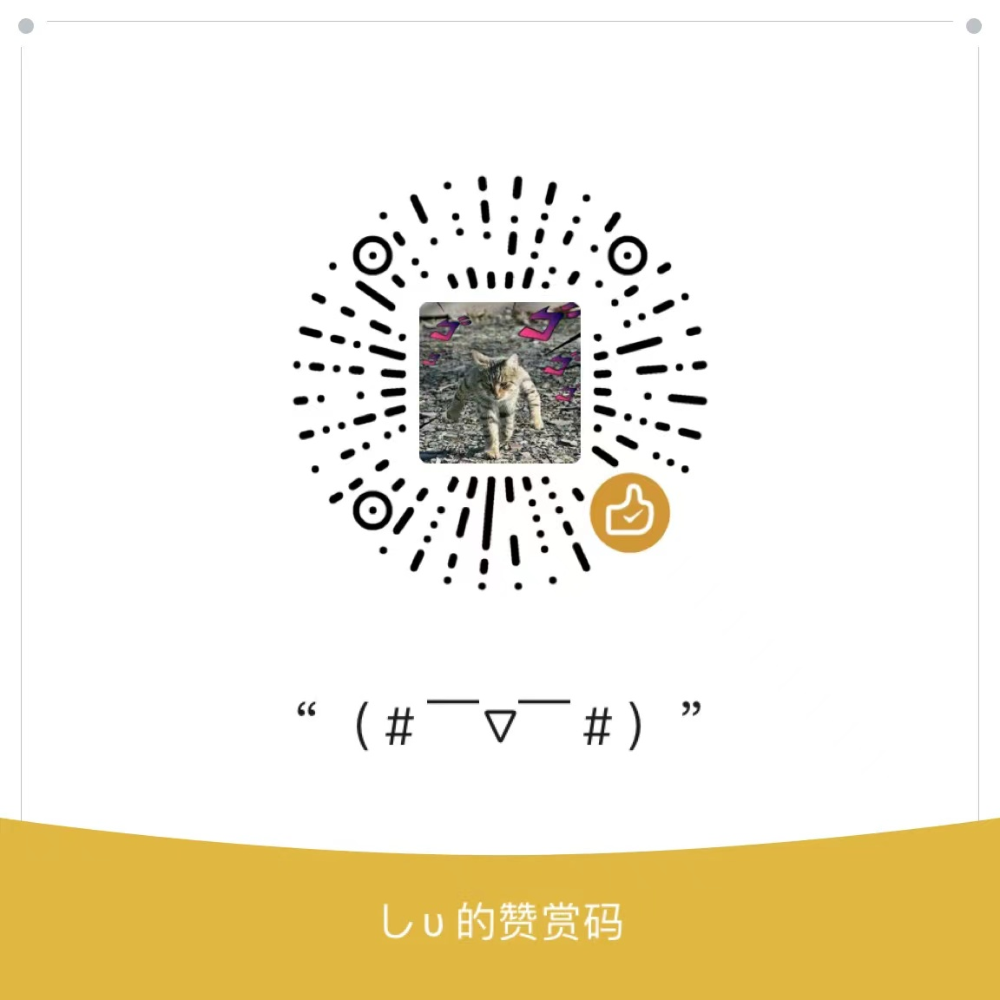

ON
OFF
save
By: raindrop213
Copy
Ignore Furigana: 忽略振假名
Show Copy Content: 显示复制内容
Paragraph Symbol Pairs: 忽略首尾符号对
Sentence Delimiters: 断句符号
Segmentation Threshold: 断句的字数阈值(需刷新网页)
Reading Interval: 自动朗读间隔(ms)
TTS
Windows
Voice: 人物
Rate (0 - 2): 语速
1
Pitch (0 - 2): 音调
1
VITS
需要下载：
vitsTTS整合包
API Clip: 桥接插件与vits的端口
API VITS: vits语音合成的端口
Voice: 人物
Language: 语言
auto
ja
zh
Length (0 - 2): 语速
1
Noise: 声音随机性
NoiseW: 随机发声时长
Max: 文字分段处理阈值
Streaming 流式传输
Translator
Google
Google:
From:
auto
zh
cht
ja
en
To:
zh
cht
ja
en
Youdao
Youdao:
From:
auto
ja
en
zh
cht
To:
zh
cht
ja
en
Deepl
Deepl:
From:
auto
ja
en
zh
To:
zh
ja
en
Style
Border Width: 框宽度
Border Style: 框样式
None
Solid
Dotted
Dashed
Double
Groove
Ridge
Inset
Outset
Border Radius: 框圆角
Free Border Color: 预选框
Selected Border Color: 激活框
Selected Sentence Color: 预选句子
Fade away: 延迟消失(ms)
Scroll Switch: 画面跳转开关
Scroll into view: 跳转的过程
smooth
instant
Guide
使用说明
点击
Click
文本段落就可以朗读和复制到剪切板；
方向键
↑
上一段 和
↓
下一段，并触发复制和朗读，也对应备用键位
Num 2
和
Num 1
；
空格键
Backspace
自动读书，一段接一段播放；
键盘
Num 0
或
F1
触发复制和朗读当前段落；
鼠标中键
复制和朗读高亮句子；
详细使用文档请浏览该项目
仓库↗
